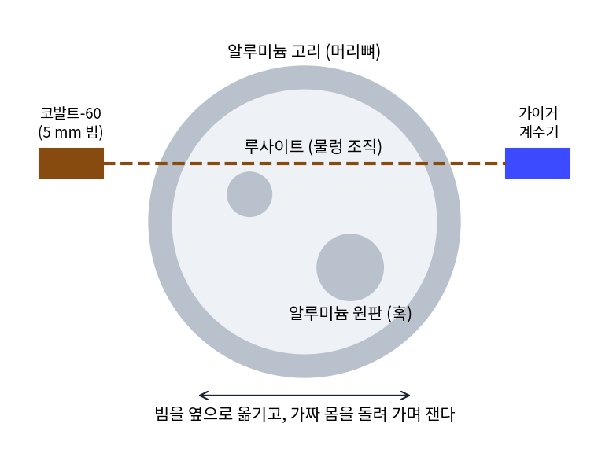
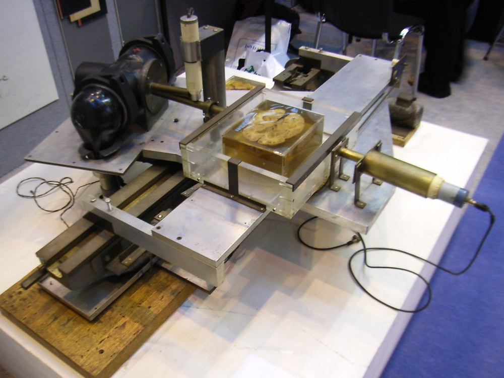
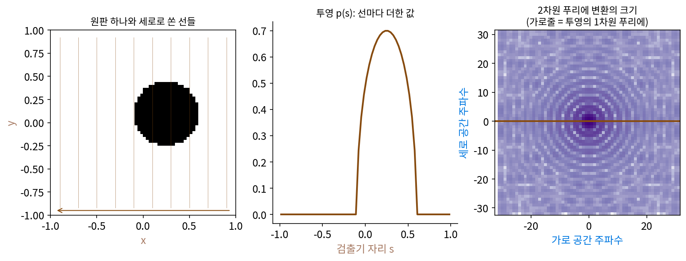
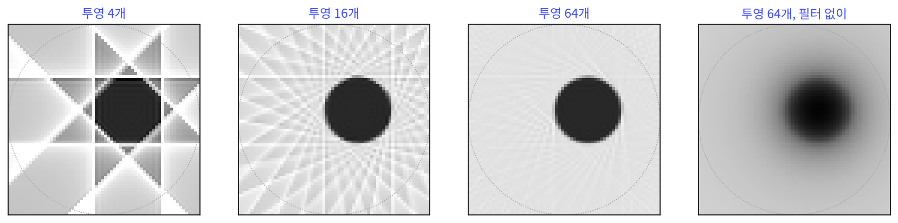
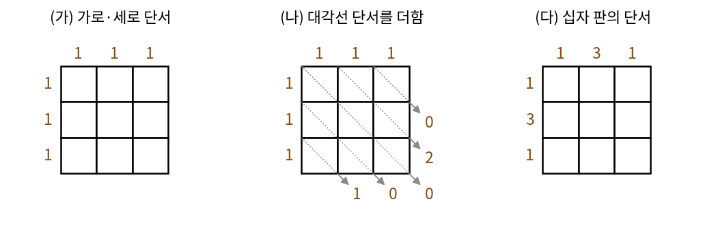
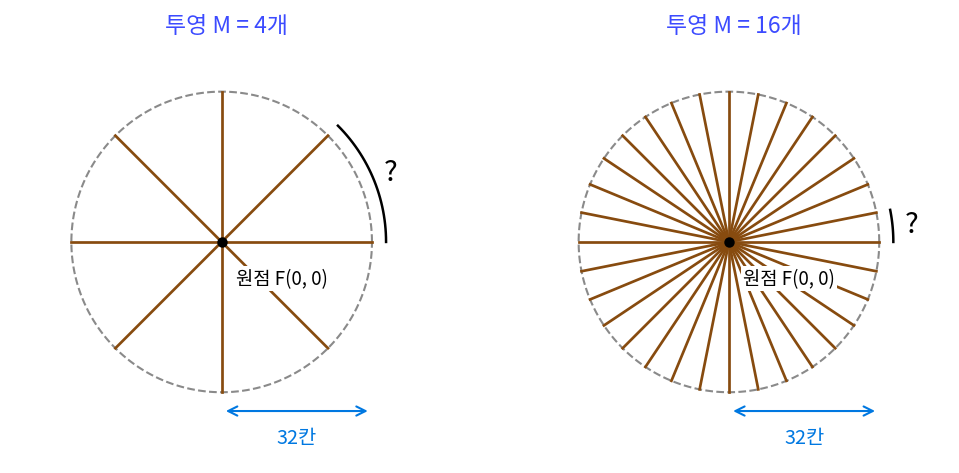
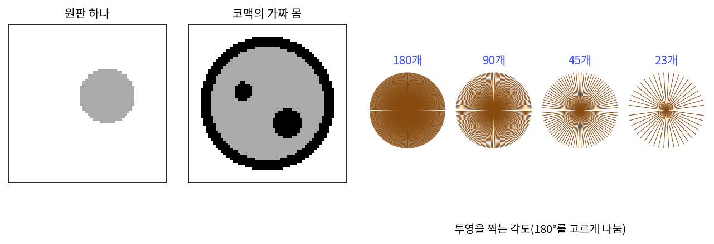
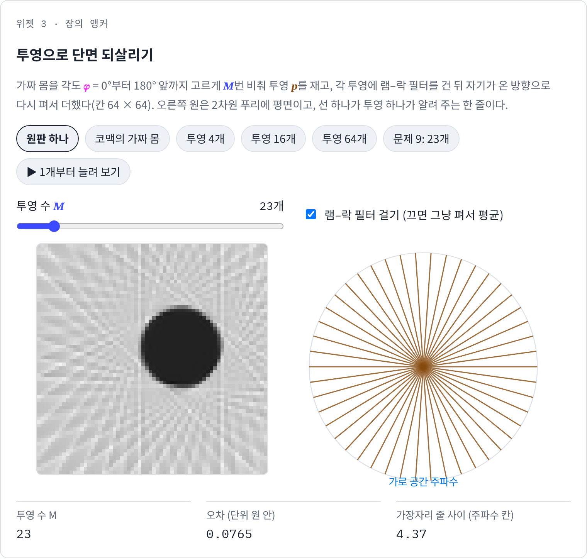

부피와 단면: 투영의 1차원 푸리에는 2차원 푸리에의 한 줄
X선 사진은 몸을 한 방향으로 꿰뚫은 X선이 얼마나 약해졌는지를 찍은 그림이다. 앞뒤로 겹친 뼈와 장기가 모두 한 장에 포개지므로, 혹이 몸의 앞쪽에 있는지 뒤쪽에 있는지 알 수 없다. 그렇다면 몸을 돌려 가며 여러 방향으로 찍으면 어떨까? 그림자 여러 장을 모으면 몸속 한 단면의 값을 칸마다 되살릴 수 있을까, 있다면 그림자가 몇 장 있어야 할까?
역사: 수학자, 물리학자, 기술자가 따로 닿은 답
그림자로 단면을 되살리는 수학은 의료와 상관없이 먼저 풀렸다. 오스트리아의 수학자 라돈(Johann Radon)은 1917년 라이프치히의 작센 학술원 보고서에 「어떤 매니폴드를 따라 잰 적분값으로 함수를 정하는 일에 대하여」를 실었다. 평면 위의 함수를 모든 직선을 따라 적분한 값을 알면 함수 자체를 되살릴 수 있다는 것과, 그 공식이다. 그 뒤 수십 년 동안 이 논문을 아는 사람은 적었다.
남아프리카의 물리학자 코맥(Allan M. Cormack)은 그 논문을 모른 채 같은 문제에 닿았다. 그의 노벨상 강연에 따르면, 1955년 케이프타운 대학 물리학 강사였던 그는 그루트슈르 병원의 병원 물리학자가 그만두자, 방사성 동위원소를 쓰려면 자격 있는 물리학자가 감독해야 한다는 법 때문에 1956년 상반기에 한 주에 하루 반씩 병원에서 일했다. 방사선 치료 계획에서는 몸을 고르게 같은 물질로 보고 방사선이 얼마나 들어가는지 계산했는데, 실제 몸은 고르지 않았다. 그는 몸 밖에서 잰 값만으로 몸속의 흡수 정도를 칸마다 알아내야 한다고 보았고, 그것이 진단에도 쓰일 것이라고 생각했다. 그 뒤 6년 동안 틈틈이 문제를 풀었고(노벨상을 받을 때 그는 미국 터프츠 대학에 있었다), 1963년 여름 학부생 헤니지(David Hennage)와 이틀 동안 실험 자료를 모았다. 가짜 몸은 머리뼈를 흉내 낸 알루미늄 고리 안에 물렁 조직을 흉내 낸 루사이트(투명한 아크릴 수지)를 채우고 혹을 흉내 낸 알루미늄 원판 둘을 박은 것이었고, 폭 5 mm 로 좁힌 코발트-60 감마선을 가짜 몸에 통과시켜 반대편 검출기로 쟀다. 1963년과 1964년에 논문으로 냈지만 그의 말로는 「반응이 거의 없었다」. 가장 흥미로웠던 별쇄본 요청은 스위스의 눈사태 연구소에서 왔다. 라돈의 논문은 1970년대 초에야 알게 되었고, 같은 무렵 1936년 스톡홀름의 통계학자 크라메르와 볼드, 1956년 오스트레일리아에서 전파 천문학을 하던 브레이스웰(Ronald N. Bracewell)도 다른 문제에서 같은 꼴의 답에 닿았다는 것을 알았다고 적었다.

장치를 만든 사람은 또 다른 길로 왔다. 영국 EMI 사의 기술자 하운스필드(Godfrey N. Hounsfield)는 따로 실험실 장치를 만들었다. 노벨상 강연에 따르면 처음 장치는 감마선이 약해서 물체 하나를 훑는 데 9일이 걸렸고, X선 관으로 바꾸자 9시간으로 줄었다. 병원에 설치한 첫 임상 장치로 찍은 첫 환자는 뇌에 병변이 의심되던 여성으로, 그림에 둥근 낭종이 또렷이 나타났다. 하운스필드는 강연에서 이 일을 1972년으로 적었는데, 여러 2차 자료는 런던 앳킨슨 몰리 병원에서 1971년 10월 1일에 찍었다고 전한다. 코맥과 하운스필드는 1979년 노벨 생리의학상을 「컴퓨터 단층 촬영의 개발」로 함께 받았다.


라돈이 1917년에 공식까지 냈는데, 코맥은 왜 6년이나 혼자 풀었어요? 논문을 찾아봤으면 됐잖아요.

오늘이라면 검색어 몇 개로 찾았겠죠. 라돈의 논문은 라이프치히 학술원 보고서에 독일어로 실린, 의료와 상관없는 글이었어요. 코맥이 안 건 1970년대 초였고요. 그런데 찾았다 해도 그 공식을 장치에 바로 쓸 수 있었을까요?

라돈의 공식은 모든 직선을 따라 적분한 값을 안다고 했죠. 장치가 재는 건 정해진 각도 몇 개에서, 폭 5 mm 빔으로 잰 값뿐인데요. 직선이 끝없이 많은 게 아니라…

그래요. 잰 값은 유한하고, 칸마다의 값을 그 유한한 값에서 계산해 내야 해요. 64 × 64칸으로 적은 단면이면 모르는 값이 몇 개죠?

4096개요. 하운스필드의 첫 장치는 감마선으로 물체 하나를 훑는 데만 9일이 걸렸다고 했으니, 재는 것도 그 값으로 칸마다 푸는 것도 사람 손으로 감당할 양이 아니었네요.

그러면 투영 하나가 단면의 무엇을 알려 주는지부터 알아야 할 것 같아요. 투영 하나를 푸리에 변환하면 단면의 스펙트럼에서 어디가 채워질까요?
원판 하나의 가짜 단층 촬영
코맥의 가짜 몸보다 더 단순하게, 원판 하나로 시작하자. 가로·세로 [−1, 1] 정사각형 안에, 가운데가 (0.25, 0.10)이고 반지름이 0.35, 값이 1인 원판을 놓고 64 × 64칸으로 적는다. 가운데에서 비켜 놓은 것은 방향마다 그림자가 다른 자리에 생기게 하려는 것이다.
각도 φ로 평행한 선들을 쏘아, 선마다 원판을 지나는 길이에 값을 곱해 더한 것이 그 각도의 투영 pφ(s)이다. s는 검출기 위의 자리다. 원판을 지나는 선의 길이는 현의 길이이므로 가장 큰 값은 지름 0.70이고, 어느 각도에서 보아도 투영 아래의 넓이는 원판의 넓이 π × 0.35² = 0.3848(칸으로 계산하면 0.384~0.386)이다.
이제 아래로 비춘 투영(각도 0, 세로로 쏜 선들)을 1차원 이산 푸리에 변환한 것과, 원판 그림 전체를 2차원 이산 푸리에 변환한 것을 나란히 놓아 보자. 세로로 더한 64칸 투영의 계수 64개는, 2차원 계수 가운데 세로 주파수가 0인 가로줄 64개와 가장 큰 차이가 5.7 × 10⁻¹⁴, 계산 반올림만큼만 다르다. 가로로 비춘 투영은 세로줄과 같다.

이렇게 되는 것은 2차원 계수의 식 때문이다. 세로 주파수가 0이면 세로 방향의 물결은 상수 1이므로, 2차원 계수는 「세로로 먼저 더하고 가로로 물결을 곱해 더한 것」이 된다. 세로로 먼저 더한 것이 투영이다. 좌표축을 어느 각도로 돌려도 「한 방향으로 먼저 더하고 수직 방향으로 물결을 곱해 더한다」는 계산이 똑같이 성립하므로, 어느 각도의 투영이든 그 1차원 푸리에 변환은 2차원 푸리에 변환을 원점을 지나 같은 각도로 자른 한 줄과 같다.
투영 하나를 1차원 푸리에 변환하면 2차원 푸리에 평면에서 원점을 지나는 한 줄이 채워진다는 이 사실을 푸리에 단면 정리 (투영의 푸리에 = 2차원 푸리에의 한 줄 / Fourier slice theorem)라 한다. 투영을 여러 각도로 모으면 원점을 지나는 줄이 부챗살처럼 평면을 채우고, 평면이 다 채워지면 2차원 역변환 한 번으로 단면이 나온다. 몸을 돌려 가며 찍는 것도 이 때문이다.
실제 장치는 부챗살을 격자로 옮겨 담아 2차원 역변환하는 대신, 단면을 되살리는 계산을 칸에서 바로 한다. 투영마다 주파수 응답이 |ρ|인 필터(램–락 필터)를 걸고, 거른 투영을 자기가 온 방향으로 다시 펴서(선 위의 모든 칸에 같은 값을 칠해) 모든 각도에서 더한다. 이를 거른 역투영(filtered back projection)이라 한다. 필터 |ρ|는 부챗살이 원점 근처에서 촘촘하고 멀어질수록 줄 사이가 벌어지는 것을 바로잡는 무게이고, 투영 4개, 16개, 64개로 되살린 결과는 아래와 같다.
| 투영 수 M | 오차 (단위 원 안 칸의 제곱 평균 제곱근) | 원판 안 평균 |
|---|---|---|
| 4 | 0.3354 | 0.985 |
| 16 | 0.1034 | 0.975 |
| 64 | 0.0507 | 0.972 |
| 180 | 0.0499 | 0.972 |

투영 4개면 원판이 네모 비슷하게 나오고 네 방향 줄무늬가 원판 밖까지 뻗고, 16개면 원판은 둥글어지고 줄무늬가 가늘어진다. 64개면 줄무늬가 거의 사라지고, 그 뒤로는 오차가 0.05 근처에서 더 줄지 않는다. 필터 없이 64개를 펴서 평균하면 원판 밖에도 원판 안 밝기의 31% 가 번져, 밝기를 맞춰도 오차가 0.3191 로 남는다. 코맥의 가짜 몸(고리와 원판 둘)으로 하면 오차가 투영 4개에서 1.5337, 16개에서 0.4233, 64개에서 0.2466 이다. 값이 3인 고리의 가장자리가 많아 투영을 늘려도 남는 오차가 더 크다.
ML에서: 투영을 줄이고 신경망으로 줄무늬를 걷기
방사선을 덜 쬐려면 투영 수를 줄여야 하는데, 투영이 적으면 거른 역투영 그림에 줄무늬가 남는다. 진경환(Kyong Hwan Jin)과 동료들은 2017년 영상 처리 학술지(IEEE TIP)에 낸 「영상 역문제를 위한 깊은 합성곱 신경망」에서, 먼저 거른 역투영으로 줄무늬가 낀 그림을 만들고 U-Net 꼴의 합성곱 신경망이 그것을 깨끗한 그림으로 바꾸도록 학습시켰다(FBPConvNet). 평행 빔 X선 단층 촬영에서 투영을 50개까지 줄인 경우를 합성 자료와 실제 측정 자료로 시험했고, 512 × 512 그림 하나를 그래픽 처리 장치에서 1초 안에 되살렸다고 보고했다. 신경망이 처음부터 단면을 그리는 대신, 푸리에 단면 정리로 만든 그림의 남은 줄무늬만 걷어 내게 한 것이다. 투영 수를 얼마나 줄일 수 있는지는 아래 문제 9에서 따진다.
문제 7. 노노그램의 그림자
3 × 3 칸 노노그램(칸마다 칠하거나 비우는 퍼즐)에서 가로줄마다 칠한 칸 수가 (1, 1, 1), 세로줄마다도 (1, 1, 1) 이라는 단서만 받았다. (가) 단서에 맞는 판은 몇 개인가? (나) 오른쪽 아래로 내려가는 대각선마다의 칠한 칸 수(왼쪽 아래 구석부터) (1, 0, 0, 2, 0) 을 더 받으면? (다) 가운데 십자 모양 판(가로 (1, 3, 1), 세로 (1, 3, 1))은 가로·세로 단서만으로 하나로 정해지는가? 이 퍼즐과 단층 촬영은 무엇이 같은가?

(가)는 줄마다 하나씩이니까 한 판이요. 대각선이 다 칠해진 판이요.
대각선 판 말고, 첫째 줄은 가운데 칸, 둘째 줄은 오른쪽 칸, 셋째 줄은 왼쪽 칸을 칠하면 단서에 맞나요?
어… 가로도 세로도 다 1이에요. 맞네요. 그러면 줄마다 어느 칸을 칠할지 고르는 경우의 수니까 3 × 2 × 1 = 6판이에요.

가로 합과 세로 합은 0°와 90° 두 방향의 투영이야. 두 방향만으로는 판이 하나로 안 정해져. (나)에서 대각선 방향 투영 (1, 0, 0, 2, 0) 을 더하면 6판 가운데 맞는 건 하나뿐이야. 방금 선생님이 말한 판이야.

(다)는요?

십자 판은 가로·세로만으로 하나로 정해져요. 가운데 줄이 3이라 그 줄은 다 칠해야 하고, 그러면 나머지가 저절로 정해져요. 어떤 판은 투영 두 개로 충분하고 어떤 판은 아니에요. 그래서 단층 촬영은 아무 몸에나 통하도록 각도를 많이 모으는 거고요.

조별 과제 점수를 「팀별 합계」랑 「주차별 합계」만 공개하면 누가 몇 점 받았는지 모르는 거랑 같아요. 다른 방향 합계를 하나 더 공개하면 다 들통나요.
문제 8. 투영이 몇 개면 충분한가
64 × 64칸 단면을 되살린다. 한 변의 칸이 64개이므로 2차원 푸리에 평면에서 원점에서 가장 먼 주파수는 32칸이다. (가) 원판 하나의 투영은 어느 각도에서나 아래 넓이가 같다. 이 넓이는 2차원 푸리에 평면의 어느 값인가? (나) 투영 M 개의 줄이 평면 가장자리(반지름 32칸)에서 이웃한 줄과 얼마나 떨어져 있는가? M = 4, 16, 64, 100 에 대해 구하고, 줄 사이가 1칸 이하가 되는 M 을 구하라. (다) 원판 하나는 M = 64 에서 이미 오차가 거의 줄지 않았다. 셈과 실제는 왜 다른가?

(가)는 넓이가 0.3848 이니까… 투영마다 줄 하나를 채운다고 했으니, 각도마다 다른 줄의 어딘가요?
넓이는 투영을 1차원 푸리에 변환했을 때 어느 칸의 값이죠?

주파수 0 칸이요. 모든 값을 그냥 더한 거니까. 그런데 모든 줄은 원점을 지나니까, 어느 투영이든 주파수 0 칸은 2차원 평면의 원점 F(0, 0) 하나예요. 그래서 넓이가 다 같네요.
(나)는 반지름 32칸에서 줄 사이 각도가 π/M 이니까 거리는 32π/M 이야. M = 4 면 25.13칸, 16 이면 6.28칸, 64 면 1.57칸, 100 이면 1.01칸. 1칸 이하가 되려면 M ≥ 32π = 100.5, 그러니까 101개야. 투영 값은 101 × 64 = 6464개로 그림 칸 4096개보다 많아.
셈으로는 101개인데, 원판 하나는 64개에서 오차 0.0507, 180개에서 0.0499 였어요. (다)는요?
원판 하나는 세기가 낮은 주파수에 몰려 있잖아요. 가장자리에서 줄 사이가 벌어져 칸이 드문드문 채워져도 오차에 별로 안 보일 것 같아요.
그럼 남은 오차 0.05 는 어디서 왔을까요? 투영을 180개로 늘려도 안 줄었어요.

아, 64칸 격자로 원판 가장자리를 적은 계단이네요. 그건 투영을 늘려도 안 없어져요.
그럼 코맥의 고리처럼 가장자리가 많은 단면이면 셈에 가까운 수가 필요하겠다.

극좌표로 넓이를 적분할 때 반지름이 클수록 부채꼴 조각이 넓어지던 것과 같아. 원점 근처는 줄이 남아도는데 가장자리는 모자라.
문제 9. 방사선을 반으로, 또 반으로
방사선 양이 투영 수에 비례한다고 하자. (가) 원판 하나와 코맥의 가짜 몸을 투영 180개, 90개, 45개, 23개로 되살린 오차를 비교하라. (나) 90개로 줄여도 오차가 거의 같다면, 왜 장치는 더 많이 찍는가? (다) FBPConvNet 같은 신경망은 투영을 줄인 그림에서 무엇을 배우는가? 그 신경망이 실제 환자에게서 조심해야 할 점은? (위젯 3의 「문제 9: 23개」로 확인해 보자.)

(가)는 원판이 0.0499, 0.0500, 0.0541, 0.0765 이고 코맥 가짜 몸이 0.2459, 0.2457, 0.2506, 0.3105 예요. 90개까지는 똑같아요. 방사선을 반으로 줄여도 되겠어요.
이 단면 하나에서는 그래요. 이 단면은 몇 칸짜리였죠?
64 × 64칸이요. 실제 장치는 훨씬 촘촘하죠. 하운스필드 강연에서도 한 단면을 투영 1000개쯤, 투영마다 값 500개쯤으로 되살렸다고 했어요. 칸이 촘촘하면 가장자리 주파수가 멀어지니까 줄도 더 많이 필요하네요.
(나)는 문제 8 셈대로야. 칸 수의 π/2 배쯤 투영이 있어야 가장자리 주파수까지 빈틈없이 채워져. 원판처럼 굵은 무늬만 있는 단면은 덜 찍어도 티가 안 나지만, 가는 혈관이나 작은 혹은 높은 주파수에 있어서 줄 사이 빈틈에 빠지면 줄무늬에 묻혀.
(다)는요?
신경망은 「투영이 적을 때 생기는 줄무늬가 어떻게 생겼는지」를 배워서 걷어 내요. 그런데 빈틈에 빠진 높은 주파수는 측정에 없던 정보니까, 신경망이 학습 자료에서 본 모양으로 채워 넣는 거예요. 학습 자료에 없던 작은 혹이 빈틈에 있었다면 그럴듯한 정상 조직으로 덮일 수도 있어요.

흐린 사진을 선명하게 해 주는 앱도 흐려서 사라진 획을 그럴듯한 글자 모양으로 지어내잖아요. 측정에 없던 가는 무늬를 학습한 모양으로 채운다는 점에서 단층 촬영 신경망과 같네요. 보기엔 깨끗한데 원래 글자가 아닐 수 있어요.
